Materi Choice
Dalam pembelajaran ini akan membahas tentang choice pada moodle, choice pada pembelajaran
ini digunakan sebaigai penilaian mahasiswa pada dosen pengajar, berikut ini adalah
contoh gambar menu choice pada moodle
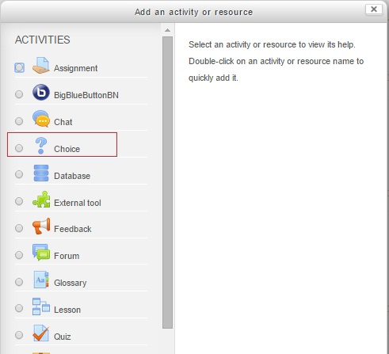
Cara Membuat Choice
Text
1. Yang dilalkukan untuk membuat choice pada moodle yaitu buka moodle kemudian login
menggunakan user : guru_1 dan passwordnya
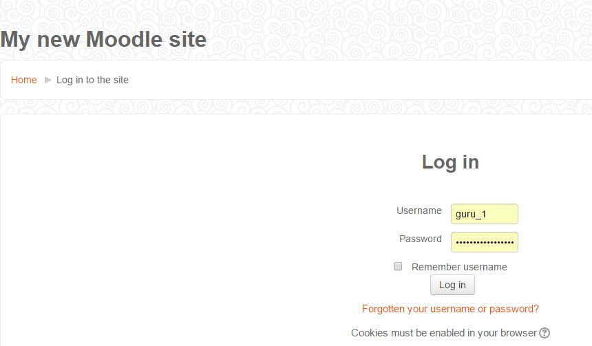
3. Kemudian akan tampil seperti gambar dan klik add new topic untuk memberikan topic
baru
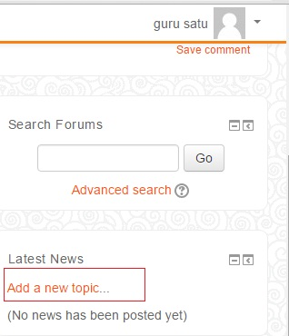
4. Pilih Menu Add an activity or resource untuk memilih choice
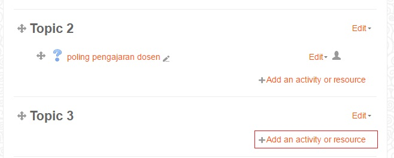
5. Berikut tampilan menu choice
6. Pada menu choice name disi dengan nama choice Description diisi dengan deskripsi
choice
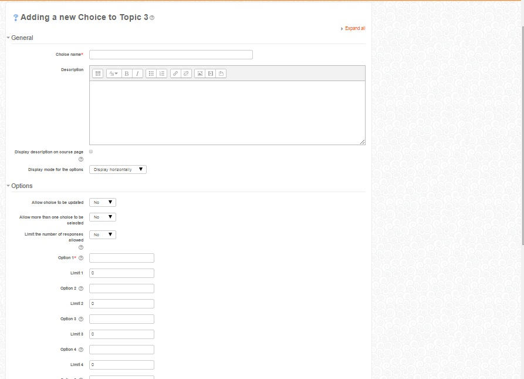
7. Menu Availability open yaitu tanggal dibukanya choice dan unti yaitu tanggal
berakhirnya choice
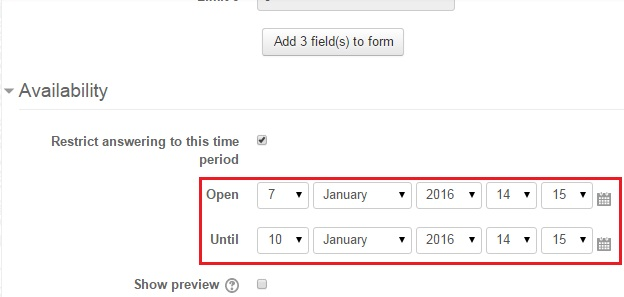
Next
Cara Membuat Choice
Text
8. Pilih save and return to course untuk menyimpan choice yang telah dibuat
9. pilih choise poling pengajaran dosen kemudian akan tampil seperti gambar seperti
ini, dan jika dipilih menu view 2 responses akan tampil seperti
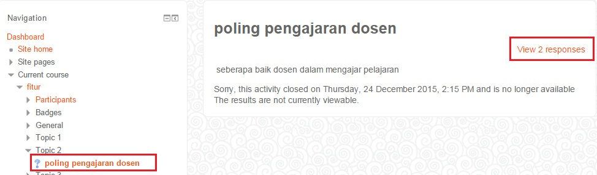
10. berikut tampilan ketika mahasiswa telah memilih isi dari poling pengajaran dosen
yaitu terdapat 2 masiswa dimana telah mengisi nilai dari dosen tersebut
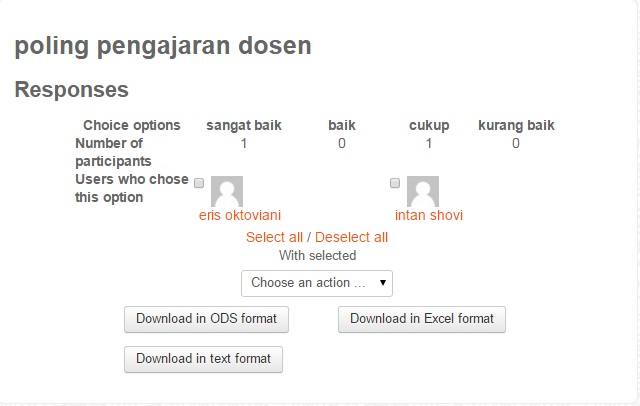
11. berikut tampilan sebagai mahasiswa yang akan melakukan poling penilaian dosen
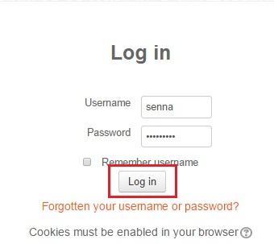
12. Pilih menu poling pengajaran dosen
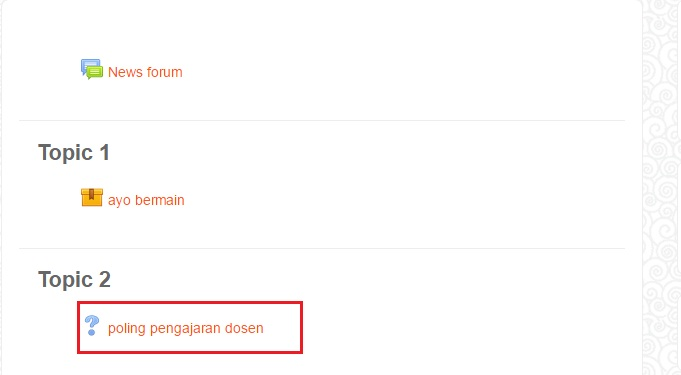
13. Berikut ini tampilan moodle mahasiswa pada poling pengajaran dosen dan mahasiswa
memilih salah satu menu tersebut dan checklist Setelah selesai memilih simpan dengan
memilih tombol save my choice
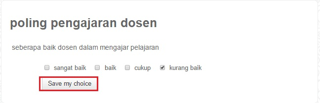
14. setelah disimpan apabila sukses akan muncul notifikasi seperti pada gambar yag
bertanda merah
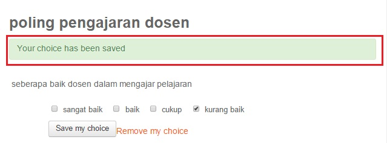
Back
Next
Apa itu Moodle??

Moodle adalah sebuah nama untuk sebuah program aplikasi yang dapat merubah sebuah
media pembelajaran ke dalam bentuk web. Aplikasi ini memungkinkan siswa untuk masuk
ke dalam ruang kelas digital untuk mengakses materi-materi pembelajaran. Dengan menggunakan
moodle, kita dapat membuat materi pembelajaran, kuis, jurnal elektronik dan lain-lain.
Moodle itu sendiri adalah singkatan dari Modular Object Oriented Dynamic Learning
Environment.
Contact Pembuat
Text
Text
Nama : Diah Arisanti
Kelas : TI 4.1
NIM : 1112013
Alamat Email : diaharisanti60@yahoo.com
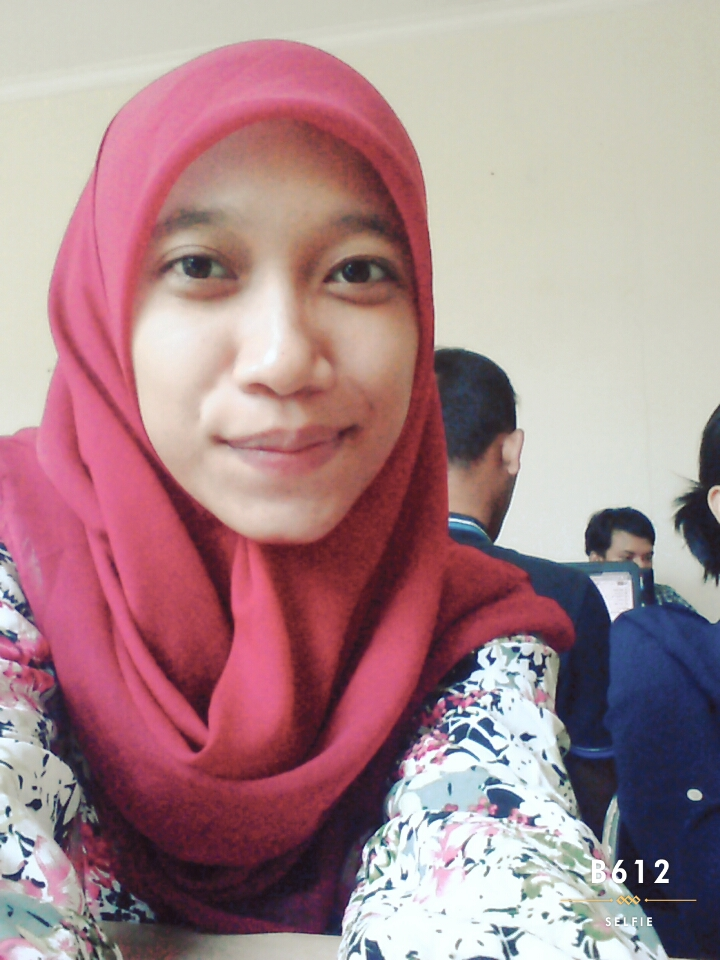